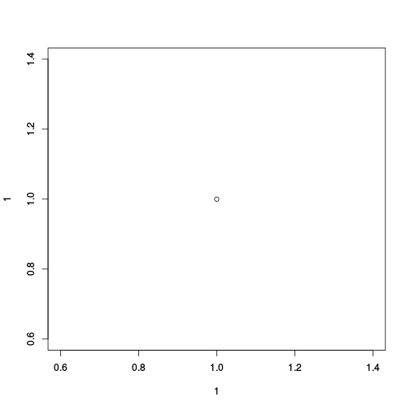

- I am an autodidact
- What I present here works for me
- Read and follow the official Google Chart API documentation and Terms of Service
- Sometimes you have re-load this presentation for the charts and all slides to appear
Daniel Fischer
Natural Resources Institute Finland, Green Technology
{r setOptions, message=FALSE}
library(googleVis)
op <- options(gvis.plot.tag='chart')
Inspired by Hans Rosling’s talks we wanted to use interactive data visualisation tools to foster the dialogue between data analysts and others
We wanted moving bubbles charts as well
The software behind Hans’ talk was bought by Google and integrated as motion charts into their Visualisation API
Ideally we wanted to use R, a language we knew
Hence, we had to create an interface between the Google Chart Tools and R
googleVis is a package for R and provides an interface between R and the Google Chart Tools
The functions of the package allow users to visualise data with the Google Chart Tools without uploading their data to Google
The output of googleVis functions is html code that contains the data and references to JavaScript functions hosted by Google
To view the output a browser with an internet connection is required, the actual chart is rendered in the browser; some charts require Flash
See also: Using the Google Visualisation API with R, The R Journal, 3(2):40-44, December 2011 and googleVis package vignette
Google Chart Tools provide a way to visualize data on web sites
The API makes it easy to create interactive charts
It uses JavaScript and DataTable / JSON as input
Output is either HTML5/SVG or Flash
Browser with internet connection required to display chart
Please read the Google Terms of Service before you start
The chart code has five generic parts:
plot(1,1)

library(googleVis)
options(gvis.plot.tag='chart')
plot(gvisMotionChart(Fruits, "Fruit", "Year", options=list(width=600, height=400)), tag="chart")